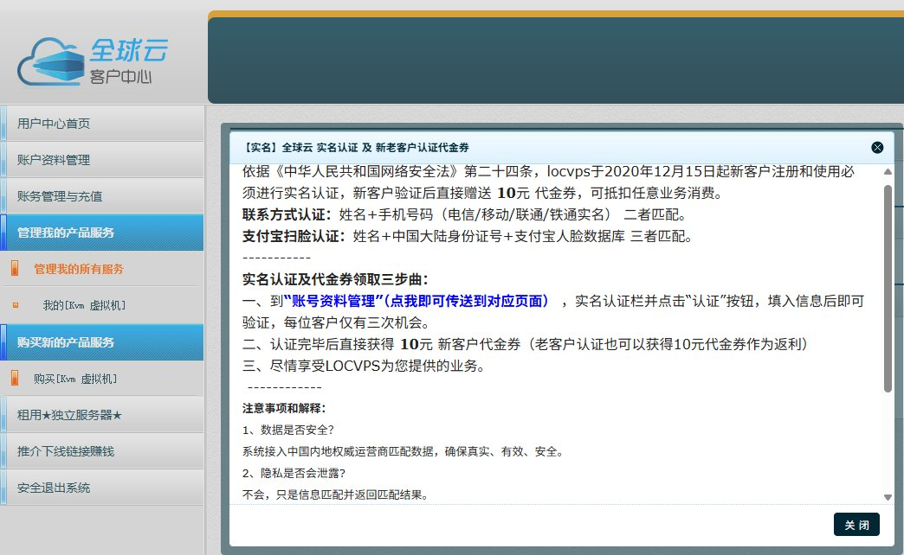
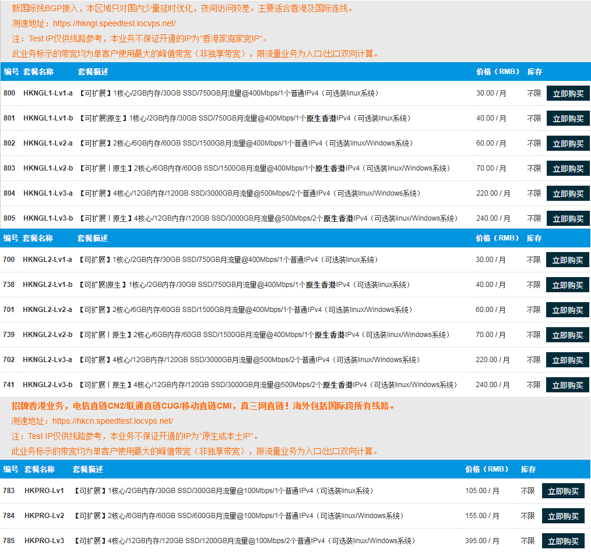
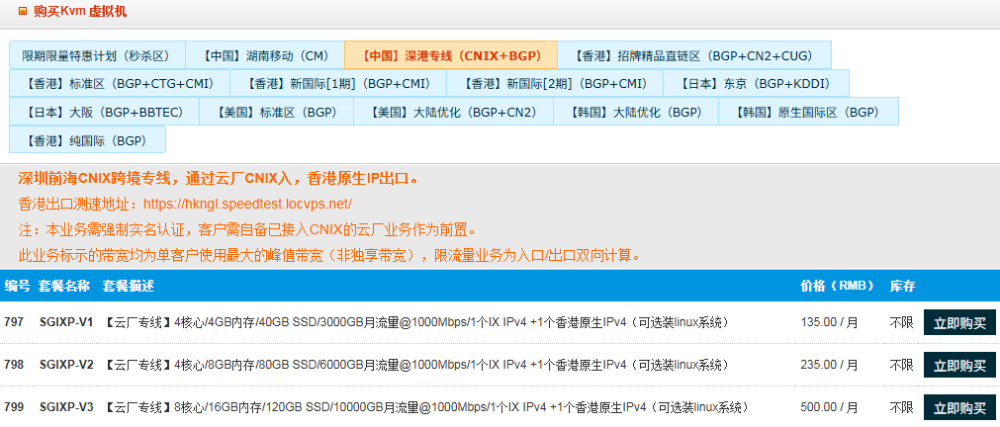

至于优化线路VPS，我用得最久的是locvps（全球云）这家，可惜需要实名认证，介意的可以跳过这帖了
以他家香港为例，每月30块就能买到CMI鸡了，400Mbps口子限750G双向。当然追求极致也可以考虑上CN2，价格就开始突破2位数了，每个产品介绍都有提供测速地址（looking glass）至于好不好用可自测后再买
当然他家也有提供深圳前海CNIX跨境专线，通过云厂CNIX入，香港原生IP出口。据说不过墙，但是需要自己通IX中转，不被打的话跨境段无QoS和高峰限制
对普通玩家来说，阿里云的所有轻量200Mbps都会达量限速至20Mbps，腾讯云的轻量200Mbps在大部分时间还是可以满速，部分时间大概50Mbps左右，特别是腾讯广州用的是电信出口。一般标配是火山云400/TB开2Gbps口畅快跑，可以做到深圳-香港6ms的延迟，当然组IX也是挺折腾的一件事毕竟国内的大厂前置决定了质量，这属于是进阶玩法了
对于其他家，我玩国际漫游太久了，除非说我在的地方基站覆盖不是很好，那我才会去用梯子。我用的VPN节点都是自建很少用机场，这也是我不怎么推机场的原因。就刚入行的时候玩的鸡，除了他家就是DMIT、搬瓦工这些老牌商家。对于国际优化不好的，如果IDC商家不管，就直接上歇斯底里（hy2）协议当大水枪喷着玩。怕被墙就是VLESS+Reality去拿大厂SNI做伪装，市面上的一键脚本基本是用雅虎，当然也可以用苹果iCloud


以他家香港为例，每月30块就能买到CMI鸡了，400Mbps口子限750G双向。当然追求极致也可以考虑上CN2，价格就开始突破2位数了，每个产品介绍都有提供测速地址（looking glass）至于好不好用可自测后再买
当然他家也有提供深圳前海CNIX跨境专线，通过云厂CNIX入，香港原生IP出口。据说不过墙，但是需要自己通IX中转，不被打的话跨境段无QoS和高峰限制
对普通玩家来说，阿里云的所有轻量200Mbps都会达量限速至20Mbps，腾讯云的轻量200Mbps在大部分时间还是可以满速，部分时间大概50Mbps左右，特别是腾讯广州用的是电信出口。一般标配是火山云400/TB开2Gbps口畅快跑，可以做到深圳-香港6ms的延迟，当然组IX也是挺折腾的一件事毕竟国内的大厂前置决定了质量，这属于是进阶玩法了
对于其他家，我玩国际漫游太久了，除非说我在的地方基站覆盖不是很好，那我才会去用梯子。我用的VPN节点都是自建很少用机场，这也是我不怎么推机场的原因。就刚入行的时候玩的鸡，除了他家就是DMIT、搬瓦工这些老牌商家。对于国际优化不好的，如果IDC商家不管，就直接上歇斯底里（hy2）协议当大水枪喷着玩。怕被墙就是VLESS+Reality去拿大厂SNI做伪装，市面上的一键脚本基本是用雅虎，当然也可以用苹果iCloud



自建梯子就要买VPS，目前国内宽带业务就那三家，广电没有自己的骨干网就不提了。除了电信绕美，移动往香港，联通往日本、德国效果很不错，现在移动单宽带tb上一年大概也就几百，我们先说看线路再分享我用的那几家
买VPS时，商家会提供测试IP，如果还有looking https://t.co/0F4uQb1pr7
买VPS时，商家会提供测试IP，如果还有looking https://t.co/0F4uQb1pr7